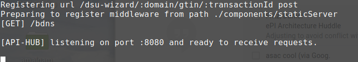

UC3 Finished Goods Traceability fgt-workspace


fgt-workspace bundles all the necessary dependencies for building and running Finished Goods Traceability SSApps in a single package.
( This workspace was originally forked from the https://github.com/PharmaLedger-IMI/epi-workspace )
Licence
MIT License
Copyright (c) 2021 PharmaLedger Consortium
Permission is hereby granted, free of charge, to any person obtaining a copy of this software and associated documentation files (the "Software"), to deal in the Software without restriction, including without limitation the rights to use, copy, modify, merge, publish, distribute, sublicense, and/or sell copies of the Software, and to permit persons to whom the Software is furnished to do so, subject to the following conditions:
The above copyright notice and this permission notice shall be included in all copies or substantial portions of the Software.
THE SOFTWARE IS PROVIDED "AS IS", WITHOUT WARRANTY OF ANY KIND, EXPRESS OR IMPLIED, INCLUDING BUT NOT LIMITED TO THE WARRANTIES OF MERCHANTABILITY, FITNESS FOR A PARTICULAR PURPOSE AND NONINFRINGEMENT. IN NO EVENT SHALL THE AUTHORS OR COPYRIGHT HOLDERS BE LIABLE FOR ANY CLAIM, DAMAGES OR OTHER LIABILITY, WHETHER IN AN ACTION OF CONTRACT, TORT OR OTHERWISE, ARISING FROM, OUT OF OR IN CONNECTION WITH THE SOFTWARE OR THE USE OR OTHER DEALINGS IN THE SOFTWARE.
Running
To run the application launch your browser (preferably Chrome) in Incognito mode and access the http://localhost:8080 link.
You will be present with a menu from where you can choose the SSApp you with to launch
Modules (Should Be Repos!)
TODO:
split DSU Wizard into:
- PDM-DSU-Toolkit: (logic usable to any OepnDSU project, not just PDM's use cases or even Pharmaledger)
- FGT-DSU-Wizard: Inherits the toolkit and
Architecture
DSU Types
{kind=link}
Installation
In order to use the workspace, we need to follow a list of steps presented below.

Step 1: Clone the workspace
$ git clone https://github.com/PharmaLedger-IMI/fgt-workspace.git
After the repository was cloned, you must install all the dependencies.
For the latest versions do:
$ cd fgt-workspace
#Important: If you plan to contribute to the project and/or dependecies please set DEV:true
#in the file env.json before you run the installation!
$ npm run dev-install
For latest 'stable' version do:
$ npm run install
instead.
Note: this command might take quite some time depending on your internet connection and you machine processing power.
Step 2: Launch the "server"
While in the fgt-workspace folder run:
$ npm run server
At the end of this command you get something similar to:

Step 3: Build all DSUs and anchor them to the 'blockchain'.
Open a new console inside fgt-workspace folder and run:
# Note: Run this in a new console inside "fgt-workspace" folder
$ npm run build-all
Documentation
To be able to generate the documentation for this project via
$ npm run docs
draw.io must be installed. Can be also obtained via
$ snap install drawio
in linux
after instalation if not present, add drawio to path
$ which drawio
add a file under docs/bin called drawio_exec_command.os containing the command/path to execute drawio
- Linux:
echo "drawio" - Windows:
echo "${PATH_TO_DRAW_IO}\drawio.exe"
Build Mobile
Currently Not Supported
Build Android APK
TODO Not working...
Steps
- Install all dependencies (as develoment) for this workspace
npm run dev-install
- Bind Android repository into workspace
npm run install-mobile
- Launch API HUB
npm run server
- Prepare the Node files that will be packed into the Android app
#In another tab / console
npm build-mobile
- Have /mobile/scan-app/android/local.properties file with the following content
# Change the value to your SDK path
sdk.dir=/home/alex/Android/Sdk
- Build the APK
npm build-android-apk
This concludes the steps to build the APK file.
Note: The .apk file should be in folder
mobile/scan-app/android/app/build/outputs/apk/release
Build iOS App
Currently not supported
Workspace Description
pre-install (before running npm install)
- apihub-root: Folder containing the root of what is served by the server
- external-volume: configs directory;
- internal-volume: volume folder (brick storage). contains the several configured domains
- wallet patch folders: the folders contain, in the wallet-patch folder and for each case, the custom 'behaviour' that is added to the template folder:
- fgt-mah-wallet/wallet-patch;
- fgt-pharmacy-wallet/wallet-patch;
- fgt-wholesaler-wallet/wallet-patch;
- fgt-dsu-wizard: based on gtin-dsu-wizard
- fgt-mah-wallet
- fgt-pharmacy-wallet
- fgt-wholesaler-wallet
- Wallets for each one of the actors
- trust-loader-config: custom config to override the wallet loader default ones for each case:
- fgt-mah-fabric-wallet/loader;
- fgt-pharmacy-fabric-wallet/loader;
- fgt-wholesaler-fabric-wallet/loader;
post install (after running npm install)
- General use:
- cardinal: the web framework used for frontend;
- pharmaledger-wallet: the default wallet implementation to be used by all ssapps - comes from http://github.com/privatesky/menu-wallet-prototype.git
- node_modules: node modules folder (includes the octopus custom builder)
- privatesky: the openDSU code. notable folders are:
- privatesky/modules: all the code for the several modules (openDSU is one of them);
- privatesky/psknode/bundles: all the code from the previous path, with each module bundled into a single file;
- themes: the folder with all the installed themes:
- pharmaledger-theme: custom theme for the pharmaledger implementation comes from https://github.com/PrivateSky/blue-fluorite-theme;
- Use case related:
- Apihub-root: Folder changes:
- wallet loaders: clones the loader into each of the wallets:
- fgt-mah-wallet/loader;
- fgt-pharmacy-wallet/loader;
- fgt-wholesaler wallet/loader;
- wallet loaders: clones the loader into each of the wallets:
- fgt-mah-ssapp: The application for the Mah;
- fgt-pharmacy-ssapp: The application for the pharmacy;
- fgt-wholesaler-ssapp: The application for the wholesaler;
- gtin-dsu-wizard: the ssapp the creates GTIN based DSUs. Cloned from epi;
- gtin-resolver: the 'library' to resolve gtin+batchs to dsus. Cloned from epi;
- Apihub-root: Folder changes: